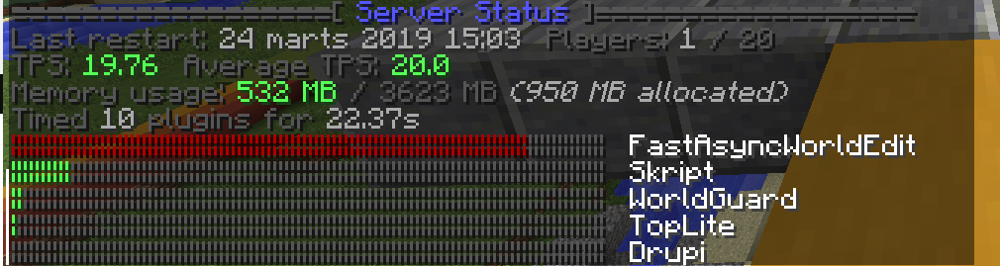
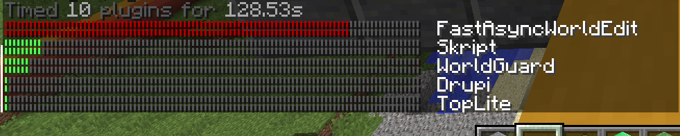

Drupi is a plugin that allows you to create custom plugins easily using JavaScript that are cross-compatible between Minecraft: Java and Bedrock Edition. To get started with Drupi, click here to download our plugin for Spigot or Nukkit respectively, restart your server and begin coding your first Drupi plugin!
when developing a server?
Compatible with java and bedrock edition.
Let Drupi JS handle the hard work! 💪
JavaScript is a modern language powering websites
and companies such as Netflix and Microsoft.
Already know JavaScript or Java?
Read the guide and get started in no time!
Vs Skript
These results are made using TopLite Both Drupi and Skript have 1 command and 1 event (PlayerJoinEvent) registered.
After 22 Seconds:

After 128 Seconds:
